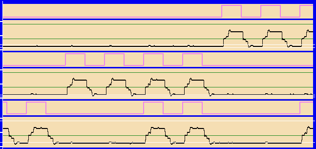
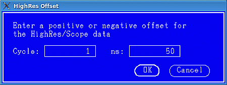
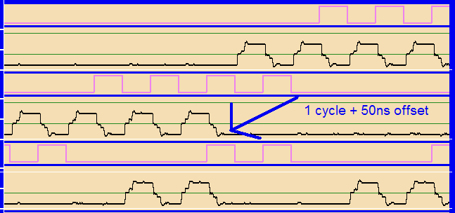

Aligning drive and receive data in high resolution and scope mode
In a transition tracking setup, the tracker must be temporarily disabled when a high resolution or scope measurement is performed. This will cause the received data to be misaligned with the drive data. However, the timing diagram provides the option to re-align the receive data manually.
In order to do so select
This will open a dialog window where you can enter a positive or negative offset for the receive data. The offset is specified in cycles plus an additional number of nanoseconds.
Example
The following example shows the effect of the re-alignment:



Note that this example is only intended to illustrate the shifting mechanism. It does not reflect the use case described above.
Functional changes
- Introduced in SmarTest 7.0.1